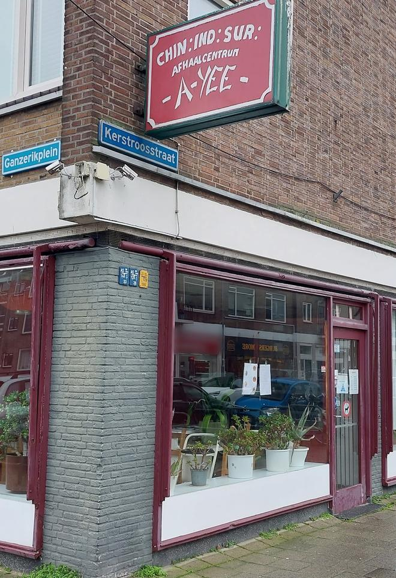
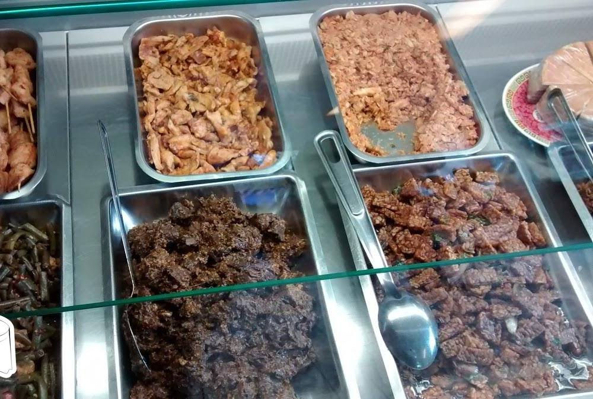
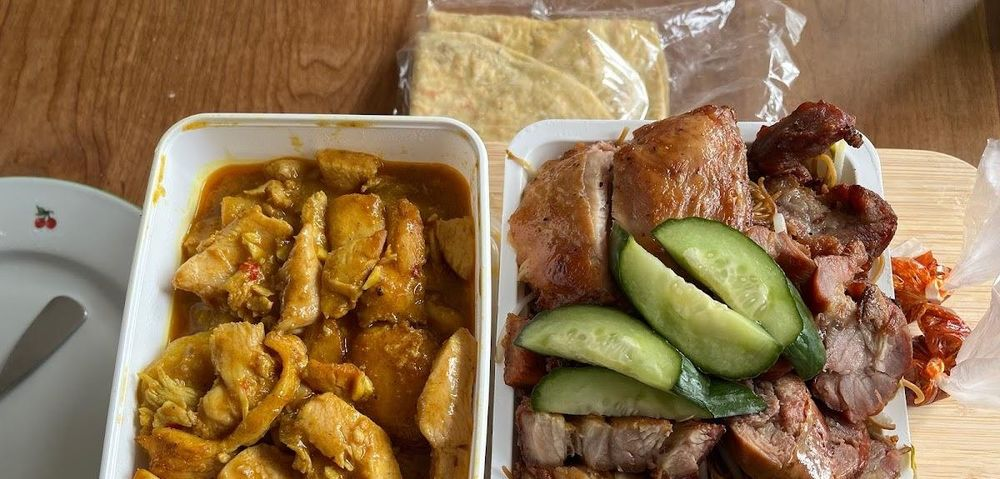
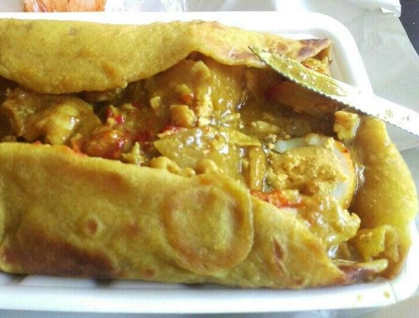
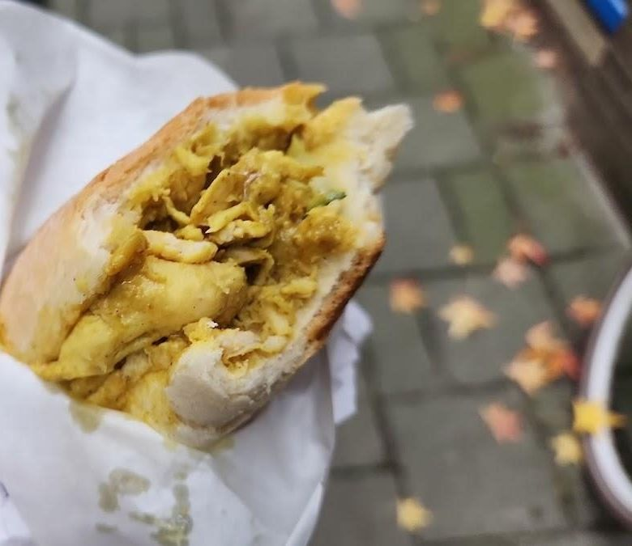
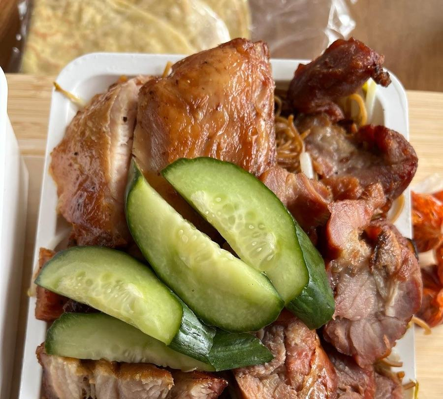
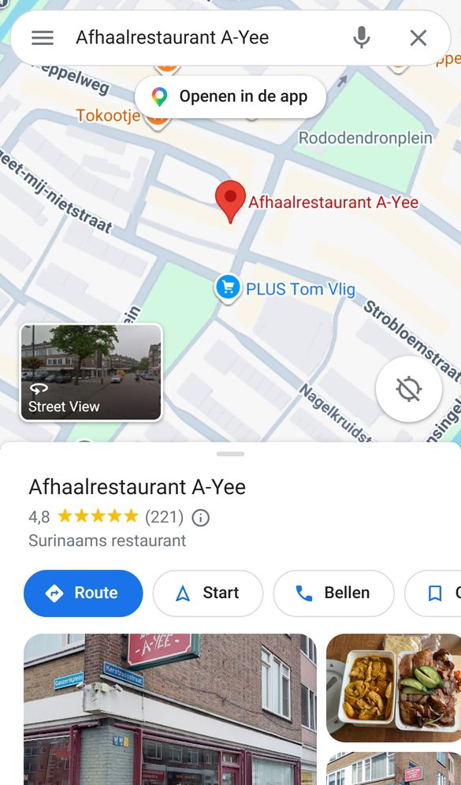
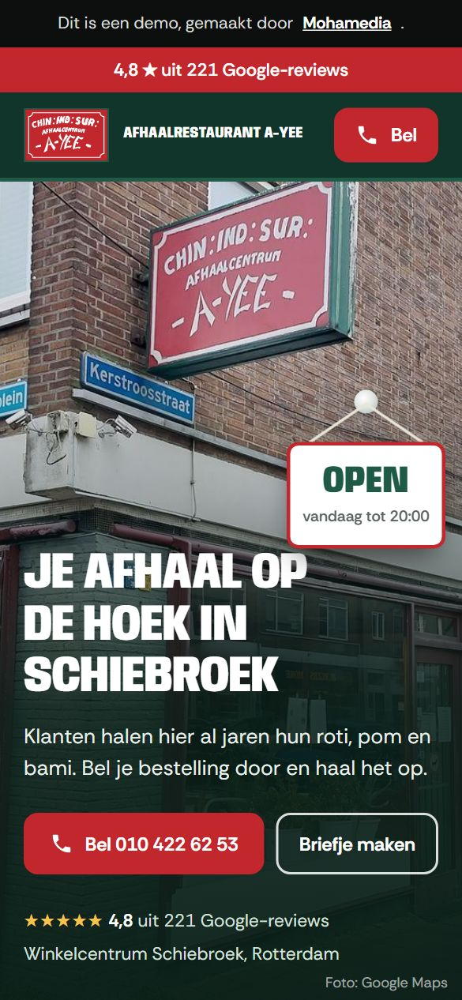

Ook van ver
Klanten schrijven dat ze al jaren komen: vanuit Hoek van Holland, en ook na een verhuizing.

Klanten halen hier al jaren hun roti, pom en bami. Bel je bestelling door en haal het op.
4,8 uit 221 Google-reviewsWinkelcentrum Schiebroek, Rotterdam
Foto: Google Maps
Tik aan wat je wilt, kies wanneer je het ophaalt, en lees het briefje voor als je belt. Dan vergeet je niets.
Een greep uit de kaart. Deze gerechten noemen klanten in hun reviews. Aan de telefoon hoor je wat er vandaag allemaal is.
Zo zag het eruit bij gasten die er hun eten haalden en er een foto van op Google zetten.





Foto's van gasten op Google, via Restaurant Guru.
Klanten schrijven dat ze al jaren komen: vanuit Hoek van Holland, en ook na een verhuizing.
Over de roti en pom lees je in een review: nergens beter.
In de reviews gaat het over een heel vriendelijke eigenaar en een goede prijs.
“Altijd erg lekker eten. Ondanks we verhuisd zijn, komen we regelmatig hier nog lekker ons eten ophalen!”
“Perfect!! Echte aanrader.”
Komt al jaren vanuit Hoek van Holland naar A-Yee.
De eerste twee zijn letterlijk overgenomen (Google-reviews, gelezen via Restaurant Guru). De derde is samengevat uit een Engelstalige weergave en niet letterlijk geciteerd.
Weet wat je wilt, of stel het hierboven samen op een briefje.
Bel 010 422 62 53 en geef je bestelling door.
In winkelcentrum Schiebroek, op de hoek bij het Ganzerikplein.
| Maandag | dicht |
|---|---|
| Dinsdag | bel even of we open zijn |
| Woensdag | 12:00–20:00 |
| Donderdag | 12:00–20:00 |
| Vrijdag | 12:00–20:00 |
| Zaterdag | 12:00–20:00 |
| Zondag | 13:30–20:00 |
Op feestdagen kan het anders zijn. Bel bij twijfel even.
Kerstroosstraat 113053 EB Rotterdam · winkelcentrum Schiebroek, op de hoek met het Ganzerikplein
Kerstroosstraat 11
3053 EB Rotterdam
De kaart komt van Google Maps en laadt pas als je klikt.
Bel 010 422 62 53 en geef door wat je wilt. Met de keuzehulp heb je je bestelling meteen op een briefje.
Onder meer roti, pom, broodje pom, broodje kip-kerrie en bami met kip-kerrie en spek: die noemen klanten in hun reviews. Aan de telefoon hoor je wat er vandaag is.
Bel even op 010 422 62 53, dan weet je het zeker. Woensdag tot en met zaterdag zijn we open van 12:00 tot 20:00, zondag van 13:30 tot 20:00, en maandag zijn we dicht.
Kerstroosstraat 11, 3053 EB Rotterdam, in winkelcentrum Schiebroek. Je herkent de zaak aan het rode bord op de hoek met het Ganzerikplein.


Op Google Maps staat bij jullie nu "Website toevoegen" en "Dit bedrijf claimen". Daar komt straks de link naar deze site.
€ 595 eenmalig, excl. btw (€ 719,95 incl. btw): site tot 5 pagina's, mobiel, bel-knop, Google-reviews en route, basis-SEO, hosting inbegrepen, live binnen 48 uur na betaling. Het domein staat op jullie naam.
Plus beheer: € 25 per maand excl. btw (€ 30,25 incl.), dan passen wij de kaart, prijzen en tijden voor jullie aan. Liever zelf aanpassen? Dan het klantportaal: € 249 eenmalig excl. btw (€ 301,29 incl.).
Google-profiel claimen en bijwerken kan erbij: € 75 excl. btw (€ 90,75 incl.).
© Mohamedia · demo-ontwerp, gebruik zonder betaling niet toegestaan